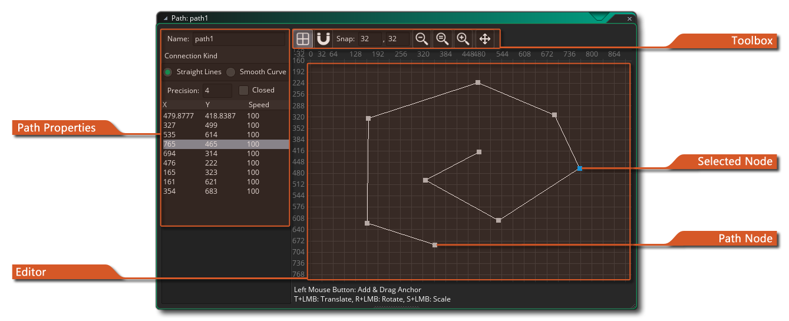
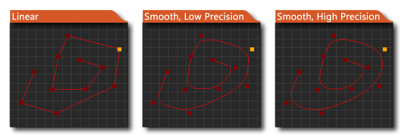

 Irgendwann während der Erstellung Ihrer Spiele benötigen Sie möglicherweise eine Ihrer Instanzen, um einem Pfad durch eine Ebene zu folgen. Nun kann dies im Code getan werden, indem einfach ein Array von Positionen innerhalb des Raums erzeugt wird und dann eine Instanz zwischen ihnen bewegt wird, aber das kann eine mühsame Aufgabe sein und ist schwierig zu ändern, zu testen und für verschiedene Instanzen anzupassen. Aus diesem Grund verfügt GameMaker Studio 2 über Pfad-Ressourcen und einen dedizierten Pfad-Editor.
Die Grundidee ist ziemlich einfach: Sie definieren einen Pfad, indem Sie ihn im Pfadeditor zeichnen. Anschließend können Sie eine Aktion (oder einen Code) in das Erstellungs-Ereignis eines Objekts einfügen, um der Instanz zu sagen, dass sie diesem bestimmten Pfad folgen soll. Sie können die Geschwindigkeit auch so einstellen, dass sie dem Pfad und einer Reihe anderer Aktionen folgt, die sich auf die Position und Ausrichtung des Pfads im Raum beziehen. Wenn Sie zuerst eine Pfadressource erstellen, wird das Pfadeditorfenster mit den folgenden Optionen geöffnet:
Wie bei allen Ressourcen in GameMaker Studio 2 sollten Sie Ihrem neuen Pfad einen eindeutigen Namen geben, da er für die Identifizierung während des Spiels verwendet wird. Ein gutes System, das von vielen genutzt wird, ist das Präfix (oder Suffix) ) die Ressource zur einfachen Erkennung in Code oder Aktionen (zB: path_Enemy_1 oder PowerUp_path ). Nachdem Sie den Pfad benannt haben, können Sie beginnen, ihn zu definieren, indem Sie im Haupteditor auf der rechten Seite Punkte platzieren, wobei jeder Punkt mit seiner Position und Geschwindigkeit der Liste hinzugefügt wird.
Sie können jeden Wert in den Pfadeigenschaften durch Doppelklicken bearbeiten
darauf und einen Wert eingeben. Der Geschwindigkeitswert für Pfadpunkte wird durch einen Prozentsatz der Geschwindigkeit definiert, mit der Sie die Instanz entlang des Pfades bewegen (Standard ist 100%). Wenn Sie also eine Instanz mit einer Geschwindigkeit von 2 (2 Pixel pro Schritt) entlang eines Pfades starten und dann einer der Pfadpunkte einen Geschwindigkeitswert von 50% hat, wird die Instanz die Geschwindigkeit verringern, wenn sie sich diesen Punkten auf eine Geschwindigkeit von 1 nähert (50% der Bahngeschwindigkeit). Ebenso können Sie die Geschwindigkeit auf 150% einstellen und die Instanz wird beschleunigen, wenn sie den Punkt erreicht. Auf diese Weise können Sie einige schöne dynamisch aussehende Bewegungen ohne jeglichen Code erstellen.
Sie können auch die Verbindungsart für den gesamten Pfad angeben und festlegen, ob der Pfad geschlossen sein soll oder nicht (ein geschlossener Pfad verbindet den letzten Punkt des Pfads mit dem ersten). Die Verbindungsart kann entweder geradlinig oder glatt sein, wobei eine gerade Verbindung die Punkte eines Pfades linear mit Winkeländerungen an jedem Punkt verbindet, während eine glatte Verbindung einen viel weicheren Pfad erzeugt, der nicht direkt passieren kann durch einen der Punkte, sondern nehmen Sie eine ungefähre Linie, um schöne Kurven zu schaffen. Sie können auch die Genauigkeit für die Kurven angeben (Standard ist 4), die von 1 bis 8 reichen kann, wobei 8 die weichste ist. Das folgende Bild zeigt ein Beispiel, wie sich diese Optionen auf den Pfad auswirken: 
Sie können dem Pfad Punkte hinzufügen, indem Sie auf klicken
/
und Linksklick
Es gibt ein zusätzliches Menü, das Ihnen im Editor-Fenster zur Verfügung steht, wenn Sie mit der rechten Maustaste klicken (siehe unten): Jedes der Elemente in diesem Menü funktioniert wie folgt:
- Punkte bearbeiten - Bearbeiten Sie die Pfadpunkte.
- Pan To Path - Verschiebt die Ansicht im Editor in die Mitte des Pfades.
- Umgekehrt - Kehrt die Reihenfolge der Pfadpunkte um. Dies verschiebt sie nicht, sondern ändert die Reihenfolge, in der sie verarbeitet werden, so dass der Start zum Ende wird und umgekehrt.
- Flip - Drehen Sie den Pfad entlang der horizontalen Achse.
- Minrror - Den Pfad entlang der vertikalen Achse spiegeln.
- Punkte löschen - Löscht den oder die ausgewählten Punkte.
Über die Schaltflächen der Werkzeugleiste oben können Sie steuern, wie die Objekte im Editorfenster gezeichnet werden. Sie können das Hintergrundraster ein- oder ausschalten sowie die Hinzufügung von Pfadpunkten auf entweder Raster festlegen oder nicht. Die Fangwerte geben die Größe der Gitterzellen an und können auf jeden gewünschten Wert geändert werden. Der Rest der Werkzeuge dient zum Zoomen und Schwenken des Editorbereichs, und Sie können auf die Schaltfläche (=) klicken, um mit der Anzeige auf 1: 1 zurückzusetzen. Wenn Sie zu weit von der Position schwenken, an der Sie den Pfad zeichnen möchten, können Sie das Kontextmenü der rechten Maustaste verwenden und dann auf "In Pfad schwenken" klicken , um zu Ihrem Arbeitsort zurückzukehren.
Pfade sind einfach eine Ansammlung von Punkten, die durch eine Linie verbunden sind. Im Editor platzieren Sie diese Punkte mit der linken Maustaste. Sie können Punkte im Raumeditor hinzufügen und sie werden der Liste nacheinander hinzugefügt, um einen Pfad zu erstellen. Wenn Sie einen Punkt in der Nähe einer Verbindungslinie oder eines anderen Knotens platzieren, wird der neue Punkt in den Pfad eingefügt und nicht hinzugefügt (Sie können den Erkennungsabstand dafür in den Einstellungen festlegen). Sie können drücken
und wählen Sie "Punkt löschen" oder drücken Sie die Taste Schlüssel.
Beachten Sie, dass Sie auch die folgenden Verknüpfungen verwenden können, um einige zusätzliche Operationen auszuführen, die nicht über das Kontextmenü auf den ausgewählten Pfadpunkten verfügbar sind:
- T +
- R +
- S +